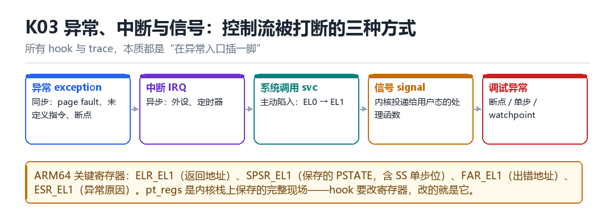

ARM64 异常、中断与信号
vector、pt_regs、syscall、IRQ、signal、debug trap
所有 hook 与 trace，本质都是“在异常入口插一脚”。

3.1 五种打断方式
| 类型 | 同步/异步 | 典型来源 |
|---|---|---|
| 异常 | 同步 | page fault、未定义指令、断点 |
| 中断 IRQ | 异步 | 外设、定时器 |
| 系统调用 svc | 同步 | EL0 主动陷入 EL1 |
| 信号 | 异步投递 | 内核替用户态“排队”一个处理函数 |
| 调试异常 | 同步 | 断点、单步、watchpoint |
3.2 四个必须记住的寄存器
ELR_EL1 // 异常返回地址（也是 hook 改返回去向的地方）
SPSR_EL1 // 保存的 PSTATE，其中 SS 位 = 单步使能
FAR_EL1 // Fault Address Register，出错地址
ESR_EL1 // 异常原因（EC 字段说明是哪类异常）pt_regs 是异常发生时压到内核栈上的一份完整现场（x0–x30、sp、pc、pstate）。hook 想改寄存器，改的就是这个结构；想改返回地址，改 pt_regs->pc。
3.3 单步是怎么实现的
把 MDSCR_EL1.SS 置 1，并把 SPSR_EL1.SS 置 1，异常返回后 CPU 每执行完一条指令就再陷入一次调试异常。这就是 M04 单步 trace 的硬件基础——不需要改任何代码，靠 CPU 自己停下来。
3.4 本章自测
- 同步异常与异步中断的区别是什么？
- 改 hook 的返回地址，改哪个寄存器或结构？
- 单步的开关涉及哪两个寄存器位？
- 为什么单步可能改变程序行为？
3.5 深入：一次系统调用的完整旅程
用户态执行 svc #0，CPU 从 EL0 陷入 EL1，走 vectors 里对应的入口，保存 pt_regs，然后根据 x8 里的系统调用号查表，跳到具体实现。返回时恢复现场，eret 回到 EL0。
| 步骤 | 发生什么 | 可 hook 的点 |
|---|---|---|
| svc 指令 | 陷入 EL1 | 替换 syscall 表 |
| 保存现场 | pt_regs 入栈 | 改寄存器 |
| 查表 | 按 x8 找实现 | 替换表项 |
| 执行 | 真正干活 | 函数入口 kprobe |
| 返回 | eret 回 EL0 | 改返回值 |
3.6 实战：用 kprobe 抓一次 openat
echo 'p:myopen do_sys_open dfd=%x0 filename=+0(%x1):string flags=%x2' \
>> /sys/kernel/tracing/kprobe_events
echo 1 > /sys/kernel/tracing/events/kprobes/myopen/enable
cat /sys/kernel/tracing/trace_pipe3.7 原理推演：为什么“异常”是 hook 的天然入口
因为异常是“CPU 主动交给内核控制权”的时刻。此时内核必然在做“保存现场 → 处理 → 恢复”这三件事，你只要在这条路径上插一脚，就能拿到完整的寄存器与内存访问权。
| 异常类型 | 能否 hook | 代价 |
|---|---|---|
| page fault | 能 | 中（高频） |
| 未定义指令 | 能 | 低 |
| 断点 BRK | 能 | 低 |
| 单步 | 能 | 高（每条指令都陷入） |
这就是为什么“硬件断点”比“改代码”更优雅：它利用的是 CPU 自带的异常机制，不需要改任何字节。
3.8 数据细节：ESR_EL1 的 EC 字段
0x00 未知原因
0x15 SVC32（AArch32 系统调用）
0x16 HVC32
0x18 MSR/MRS 或系统指令
0x20 指令 abort（低 EL，取指失败）
0x21 指令 abort（同一 EL）
0x22 PC 对齐错误
0x24 数据 abort（低 EL）
0x25 数据 abort（同一 EL）
0x26 SP 对齐错误
0x30 硬件断点（低 EL）
0x31 硬件断点（同一 EL）
0x32 软件单步（低 EL）
0x33 软件单步（同一 EL）
0x34 观察点 watchpoint（低 EL）
0x35 观察点（同一 EL）
0x38 BKPT（AArch32 断点指令）
0x3C BRK（AArch64 断点指令）处理异常时，先看 EC 就知道“这是什么类型的异常”，再决定走哪条处理路径。写 hook 时也一样：先判断 EC，再决定要不要介入。
3.9 深入：异常向量表的结构
ARM64 有 16 个异常入口，按“来源 EL × 类型”排布：当前 EL 用 SP0、当前 EL 用 SPx、低 EL 用 AArch64、低 EL 用 AArch32，每种再分同步/IRQ/FIQ/SError。这就是 vectors 表。
| 偏移 | 来源 | 类型 |
|---|---|---|
| 0x000 | 当前 EL, SP0 | 同步 |
| 0x080 | 当前 EL, SP0 | IRQ |
| 0x200 | 低 EL, AArch64 | 同步 |
| 0x280 | 低 EL, AArch64 | IRQ |
hook 异常处理时，改的就是这张表里的某一项。但注意：表在只读段里，且被 KASLR 影响——要先找到它的运行地址。
3.10 深入：为什么“信号”是异步的
因为信号的投递时机不确定：内核可能在任意“返回用户态”的时刻检查挂起的信号。所以信号处理函数可能在任意两条指令之间被调用——这也是为什么信号处理函数里只能调用“异步信号安全”的函数。
void handler(int sig) {
printf("got %d\n", sig); // 不安全！printf 不是 async-signal-safe
// 正确做法：write() 或设置一个 volatile 标志
}3.11 实战：用信号做“反调试”
- 注册一个 SIGTRAP 处理函数。
- 如果调试器在单步，SIGTRAP 会被调试器先收到，你的处理函数不会被调用。
- 于是“处理函数没被调用”就成了“正在被调试”的证据。